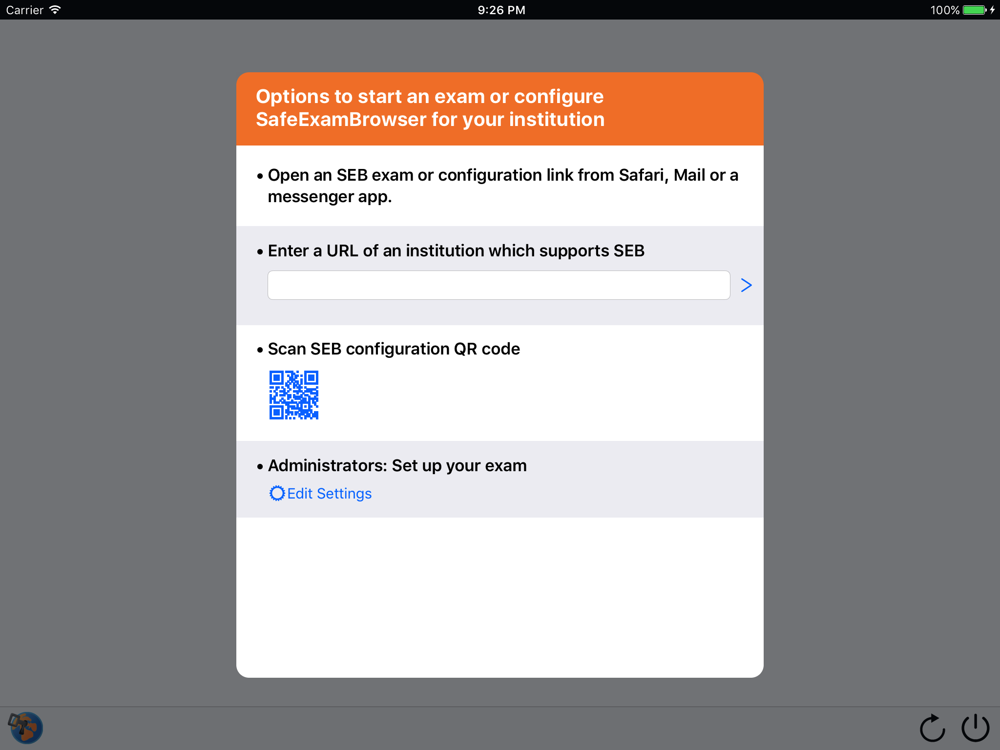
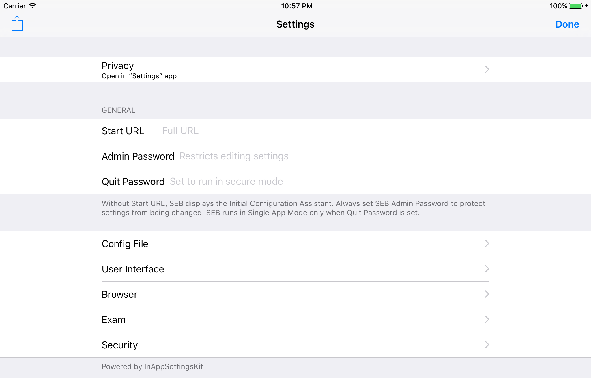
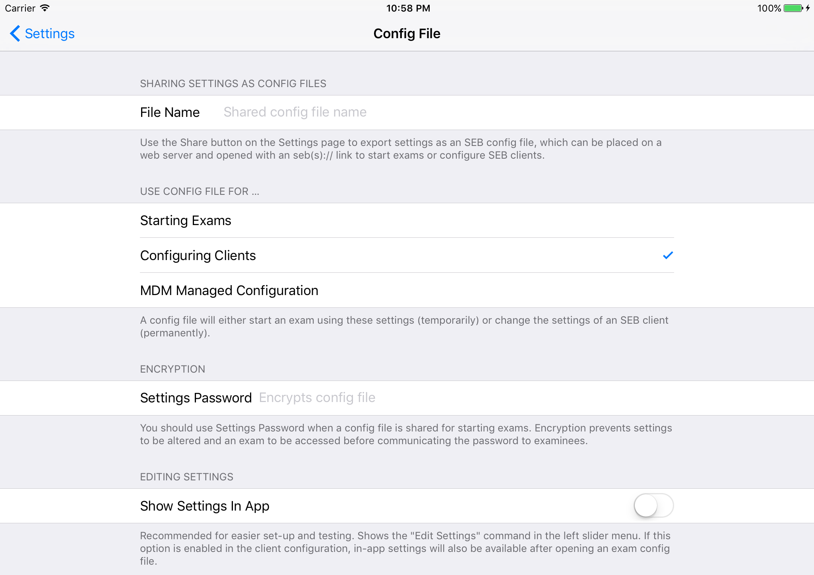
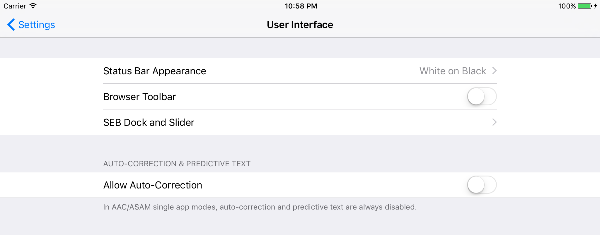
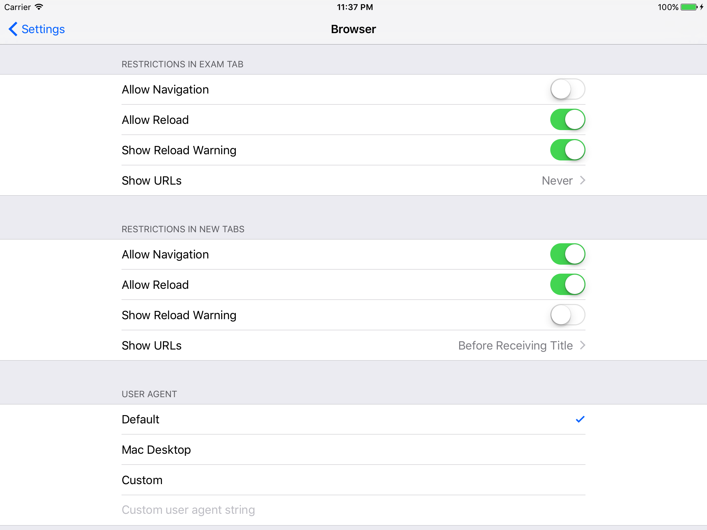
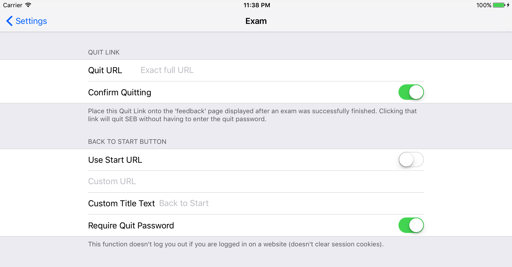
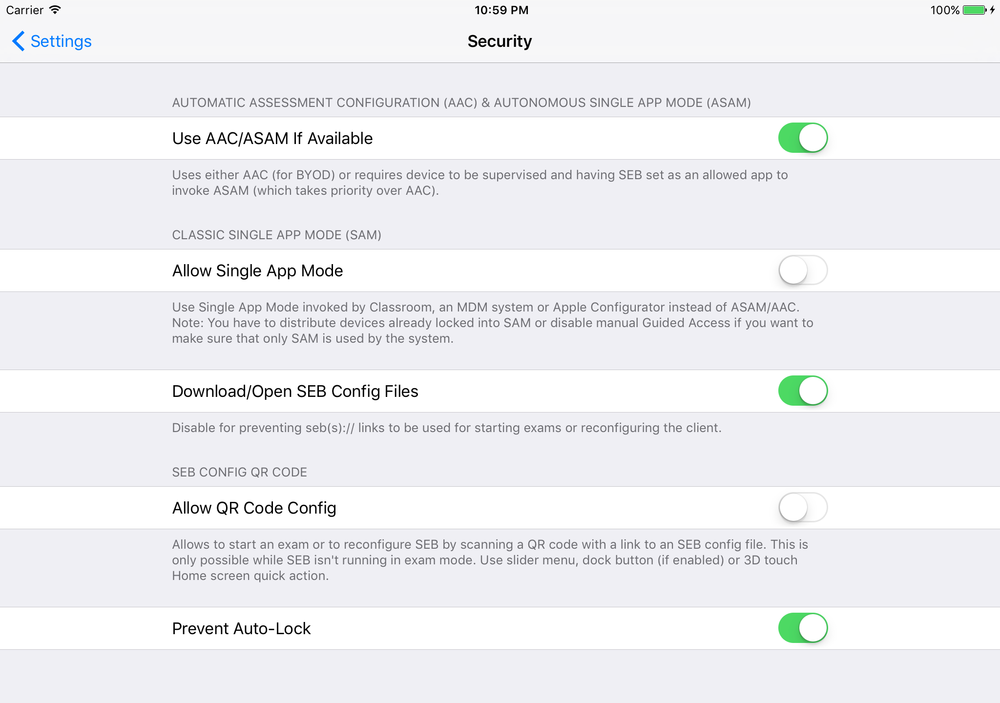

SafeExamBrowser 2.1.10 for iOS
SafeExamBrowser – SEB for iOS opens a web browser screen without navigation elements and locks an iPad (or iPhone or iPhone Touch) into a single app kiosk mode, which prevents to switch to other apps during an exam. SEB enables secure exams on unmanaged iOS devices like students' own iPads as well as on iOS devices owned and managed by an institution. SEB doesn't use a centralized server or cloud service, it can be configured with an API, config files and config links. Currently SEB integrates especially well with learning management systems (LMS) Moodle, ILIAS and OpenOLAT and several non-commercial and commercial exam systems, as for example Inspera Assessment. Generally it can easily be used with most web-based online quiz and e-assessment systems.
The following manual explains how to configure and use SEB for iOS from the perspective of exam administrators. SEB is a very flexible and modular tool, therefore documentation for examinees on how to use SEB with individual exam setups and the various exam systems it works with should be provided by the institution using SEB or their e-assessment provider.
Features
To prevent switching to other apps or interrupting an exam, SEB for iOS uses one of the single app modes provided by the iOS operating system. After an exam is submitted, SEB can automatically end the app self-lock (or ASAM) kiosk mode (an exam invigilator could also use a quit password to end SEB before an exam is finished in case needed).
SEB features an optional Dock displaying an icon for the SEB browser. Tapping this icon or swiping right from the left screen edge reveals a left slider menu with a list of open browser tabs and commands. With these command in the slider menu and buttons in the dock you can quit a browser session, jump back to the start page of an exam, reload the page and if enabled, navigate back/forward in the browsing history of the exam or web pages which are open in additional browser tabs.
Depending on the single app mode used, auto-correction and predictive text are always or optionally disabled during an exam. Auto-lock and display idle sleep is also disabled by default while SEB is running.
SEB also detects attempts to restart the device during an exam and displays a lock screen if the same exam is opened again. The locked exam can only be continued or attempted again after being unlocked with the quit password by exam supporters/supervisors.
SEB for iOS uses the same format for encrypted .seb configuration files as the SEB versions for other platforms. Those Config Files allow to individually configure SEB to display an exam start page or an exam portal page (with a list of current exams). If SEB for iOS is installed using a mobile device management (MDM) system, its initial configuration can easily be deployed using the "MDM Managed Configuration" feature.
You can also directly start an exam with an individual configuration in SEB for iOS using a special config hyperlink (using the custom SEB URL protocols/schemes seb/sebs instead of http/https). This link can be opened by examinees from Safari, Mail or some messenger app. When such a link is tapped, usually a dialog is displayed confirming if it should be opened in SEB. Then SEB opens the SEB Config File which is referred by the config link (for example sebs://shoolserver.edu/exams/demoexam.seb) and SEB is using the individual settings from that Config File, which include the actual URL of the exam (contained in the Start URL setting).
Also see the how to use SEB 2.0 document explaining the concept behind SEB 2.x.Using SEB with Supported LMS
Some learning management systems require plugins to be installed to fully support secure exams taken with SEB, others have built-in support. Please understand that you have to configure your exam system correctly to be locked down securely. SEB is generally locking down exam client devices only, not the exam system or the quiz module of a learning management system. Check documentation for your exam/learning management system on how to lock it down for an exam correctly.
Using SEB with Moodle
SEB support in Moodle has the following objectives:
- Don't display any links during an exam which would allow to navigate to other sections of Moodle or even other websites. This means the course navigation, link to the user's Moodle profile, logout, link to the University homepage etc. needs to be disabled/hidden. Only the quiz navigation (to navigate to other questions) and the "Finish attempt..." link should be visible
- Make sure a quiz can only be taken using Safe Exam Browser, display an error message if trying to open the quiz in another web browser.
- Optionally check if the correct version of SEB and legitimate SEB settings are used.
There are two options how to activate SEB support in Moodle. Both achieve the above objectives 1 and 2. Only the second option also ensures objective 3 is met:
- Enable the "classic" SEB support in Moodle: How to activate the SEB secure browser mode in a Moodle quiz. Then configure the quiz at Administration / Quiz administration / Edit settings / Extra restrictions on attempts / Browser security / Require the use of Safe Exam Browser. This option uses only a basic, not very secure check for the used browser. This may be safe enough if students can only access the exam from centrally managed university computers inside a computer lab/exam room. For other scenarios like BYOD you should use the second option.
- Not yet supported in SEB for iOS: Use the Browser Exam Key authentication in Moodle for the connecting SEB version and its settings by installing the quiz access rule plugin in Moodle. In addition you will have to copy the Browser Exam Key hash code string into the quiz settings (Administration / Quiz administration / Edit settings / Extra restrictions on attempts / Allowed browser keys). This key is generated by SEB when you save the settings you intend to use for the exam. As this key includes a hash (checksum) of both the saved exam settings and the code signature of the used SEB version, you may have to generate and copy several Browser Exam Keys into the Moodle quiz settings, for example one for the Windows version of SEB and one for the Mac version.
Sometimes hiding course navigation, link to the user's Moodle profile, logout etc. doesn't work as expected because some custom Moodle themes don't support the secure browser mode of Moodle correctly, they display links with which students can get out of the quiz during an exam. If this happens only with your customized theme and not the standard Moodle theme, then your theme is not implemented correctly. In that case you should fix the problem in your custom Moodle theme. You may also create URL filter rules which only allow to access the exam and no other parts of Moodle, but this is not trivial and we cannot provide you with any support on that.
You may find additional information and help in the discussion boards for SEB and Moodle.
Using SEB with ILIAS
You can find information about how to install the ILIAS plugin for SEB support here. Not yet supported in SEB for iOS: Use the regular quiz mode with support for Safe Exam Browser which is integrated in ILIAS.
Please note that currently support for Safe Exam Browser in ILAS can only be switched on for some roles of a whole installation, not a single exam/course.
Using SEB with OpenOLAT
An assessment mode has been added to the OpenOLAT standard with the 10.2 release. The assessment mode allows course authors to limit the functionality and access of OpenOLAT courses for exam settings. An exam setting is not limited to online tests however, IMS QTI assessments, SCORM modules, external LTI 1.1 tools and all other OpenOLAT course elements can be configured for such an exam setting.
One of the many security features is the enforced usage of Safe Exam Browser. An exam setting can be configured with multiple Browser Exam Key keys. Not yet supported in SEB for iOS.
No additional software needs to be installed in order to use the assessment mode together with Safe Exam Browser. The assessment mode is globally enabled / disabled in Administration -> Modules -> Assessment mode. Within the courses the configuration is done in the course menu.
More information and a video tutorial about the assessment mode.
Install SEB for iOS
SafeExamBrowser for iOS will soon be available in the iOS App Store (as freeware). Currently we are conducting a TestFlight testing of pre-release versions. You can contact us in the SEB discussion board if you're interested in testing SEB for iOS.
Configuration
Configuring SEB for iOS works quite similar as in the SEB desktop versions for macOS and Windows. As the .seb Config Files and seb(s):// config links are generally compatible (platform-independent), you can generate configuration files in SEB for macOS or Windows and use it also for the iOS version. However, in the current desktop versions, the setting options specific to the iOS version cannot be configured yet. If you need to change the default values for these iOS SEB setting options, you have to use the built-in settings editor in SEB for iOS. Below you'll find information about how SEB for iOS can be configured generally and a description of all setting options.
Initial Configuration Assistant
When the SEB app is started the first time, then a new Initial Configuration Assistant is displayed (instead of the default start web page which older SEB versions display).
The reason SEB displays such a configuration assistant when it is started is simple: SEB doesn't use any centralized server or cloud service. You don't need to register or buy licenses (and entering license keys after installing) to use SEB. Instead your examinees
- either directly start an exam in SEB with a special exam link;
- you provide them a link which configures the SEB app on their devices to display your exam system start page or an exam portal page (with links to individual exams);
- you use QR codes printed on paper to start exams or for the initial configuration of the SEB app to connect to your exam system/portal page;
- you use the "Automatic Client Configuration" feature, so your students can easily find the initial configuration for SEB by just entering the general URL of your institution;
- if you install SEB using a mobile device management system (MDM) on devices you provide to students, you can pre-configure the SEB app using the Managed Configuration feature most MDM systems provide.
The current version of the Initial Configuration Assistant shows you four options for starting an exam or configuring SEB for your institution:
- Open an SEB exam or configuration link from Safari, Mail or a messenger app: To try this out, you can switch to Safari (as at this point SEB isn't yet running in a single app mode) and open the demo exam portal page there. If you now click one of the links on this page, iOS will open the SEB app (after confirming this in the alert Safari displays) and the Config File referred to by the config link will be opened in SEB. This is one way of starting SEB with an individual exam configuration, by opening an seb(s):// link from Safari/Mail or another app. This method is often being used in the macOS and Windows versions, SEB for iOS is compatible with this.
- Enter a URL of an institution which supports SEB: This is a new feature, called "Automatic Client Configuration". An institution can place an SEB Config File at a specific path on their web server. SEB will search those predefined paths (there are three variations possible) when the main URL of that institution is typed in. You can try to enter let.ethz.ch, SEB will then be reconfigured to display the demo exam portal page mentioned above (this is for demonstration, for production you would set up Automatic Client Configuration to work with the top-level URL of your institution, so for example with "ethz.ch").
- Scan SEB configuration QR code: If you generate a QR code which contains an seb(s):// URL to an SEB Config File, then examinees can use the camera in their iOS device to scan the QR code and start exams (or configure the SEB app to show an exam portal page). You could for example print such a QR code onto some instruction sheet for the exam.
- Administrators: Set up your exam: Tapping the Edit Settings button opens the built-in SEB settings user interface. There you can configure the SEB app and share those settings in an SEB configuration file.
Using In-App Settings
When you start SEB the first time, you can use the Edit Settings button in the Initial Configuration Assistant. If you already changed the configuration of SEB and it doesn't display the Initial Configuration Assistant anymore, you can go to the Settings app, find SEB's setting options and enable either the Allow Editing or Initiate Settings Reset options. After returning to SEB, you'll have to enter the SEB Admin Password to edit settings or for settings being reset to its default values (then the Initial Configuration Assistant will be displayed again). If you forgot the SEB Admin Password, then you need to delete the SEB app and re-install it.
In the demo settings mentioned above the SEB Admin Password is "seb". You can also change client settings of SEB for iOS by reconfiguring it with the link Configure Client for Administrators / SEB Testing on the demo portal page, then in the left slider menu (tap SEB logo in the SEB dock at the bottom of the screen or swipe right from left display edge) you will find a command Edit Settings. The SEB Admin Password used in the demo settings is "seb", the Quit Password "quit".
SEB is generally customizable to a large extend, to allow various use cases and to be compatible to basically every web based examination system. But for the beginning, you often would only need to set the three options in the root settings pane (Start URL, Admin Password, Quit Password).
When closing in-app settings with the Done button, then SEB reconfigures and restarts itself using those edited settings, and the web page with the URL set in the Start URL field (see below) is loaded.
Settings in the General Pane
- Start URL: Full URL (starting with http:// or https://) of the page to open when SEB is started.
- Admin Password: Password required to edit or reset settings. Also if trying to reconfigure SEB with a link "for configuring a client", if the Admin Passwords in current and new settings don't match, the current Admin Password needs to be entered. It's recommended to always set an SEB administrator password.
- Quit Password: This password is prompted when users try to quit an exam session using the Quit button in the SEB Dock (rightmost button), the Quit Session command in the left slider menu or the "X" close button in front of the exam tab on top of the left slider menu. If no Quit Password is set, then SEB just prompts "Are you sure you want to quit this session?"
The Quit Password setting is also the "switch" for running SEB in a secure mode, using one of the single app (kiosk) modes which iOS provides. So if you configure SEB for an exam (exam settings), you should always set a Quit Password (as long as it isn't some kind of open book exam which doesn't require that examinees are locked into SEB during the exam). If you configure SEB (client settings) to display an exam portal page, you don't have to set a Quit Password. You would then use links to secure exam settings (with a Quit Password set). - Share Button (button top left in the navigation bar): This button displays an iOS share sheet, where you can select how to share current settings as an SEB configuration file (using options set in the Config File section). Ideally use a secure channel like AirDrop or iMessage to transfer the Config File to a desktop system where you would upload the Config File to a web server, for using it as an seb(s):// config link. You could also use an app like Transmit which provides a sharing extension to transfer files directly to web servers using SFTP and other protocols.
- Done: Close in-app settings, reconfigure and restart SEB using these edited settings.
Settings in the Config File Pane
- File Name: The file name of the SEB Config File containing exported settings (using the Share button in the root pane with General Settings. A Config File uses the file extension ".seb" when saving it for Starting Exam or Configuring Clients and ".plist" when saving for "MDM Managed Configuration" (see below).
- Use Config File for ... Starting Exam: A Config File saved with this option will open the exam in SEB, temporary using the settings saved in this Config File. The settings of the SEB app won't be changed permanently.
- Use Config File for ... Configuring Clients: An SEB settings file saved with this option can be used to change settings of an SEB client permanently. This means, next time the SEB app is started directly (by tapping its icon), it will use these settings.
Config files for configuring clients are always encrypted, even if you don't enter a settings password in the field described below. You can also encrypt such Config Files with the same password which is set as administrator password on the SEB client (if there is already one set). If there is no administrator password set on the SEB client yet or you use another settings password, then users are prompted to enter it. - Use Config File for ... MDM Managed Configuration: A Config File saved with this option can be used If SEB for iOS is installed using a mobile device management (MDM) system. Its initial configuration can then easily be deployed using the "MDM Managed Configuration" feature which most MDM systems should provide (as long as they allow to import a standard .plist property list settings file).
- Settings password: Password used to encrypt the Config File, if one is set then it will be prompted when SEB opens the settings. You should use a settings password when a Config File is shared for starting exams. Encryption prevents settings to be altered and to access the exam before communicating the password to examinees.
- Show Settings In App: Shows the Edit Settings command in the left slider menu. If this option is enabled in the client configuration, in-app settings will also be available after opening an exam config. Use this for easier setting up and testing.
Settings in the User Interface Pane
- Status Bar Appearance: Here you can select the iOS Status Bar appearance (white text on black background/ black text on white background, this only has an effect if the browser toolbar isn't enabled) and if it is displayed at all. The Status Bar displays network connectivity strength, time, bluetooth connectivity (for example for Apple Pencil) and battery status. So be careful setting Status Bar Appearance to None, examinees won't realize if their battery is running low.
- Browser Toolbar: The toolbar displays back/forward navigation buttons (if Navigation is enabled in the Browser pane), the title (or URL) of the current web page and the reload button (if Reload is enabled in the Browser pane).
- SEB Dock and Slider: The SEB Dock is displaying an icon for the SEB browser on its left. Tapping this icon or swiping right from the left screen edge reveals a left slider menu with a list of open browser tabs and commands. The rightmost icon in the SEB Dock is the Quit Button, for quitting the current exam/browser session. This closes all possibly opened additional browser tabs, reopens the start URL in the exam tab and resets the browser session cookies. Additional command item buttons in the Dock can be enabled or disabled in the sub-pane described below.
- Show Dock: If SEB Dock isn't enabled, then you can still access command items in the left slider menu. The slider can always be accessed by swiping right from the left display edge.
Dock Command Items - Show Reload Button: SEB Dock height in points (pixel height x 2 on Retina HiDPI displays). In SEB for Windows display DPI settings are now also taken in account, in touch optimized mode task bar is scaled up in addition.
- Show Navigation Buttons: Allows to reconnect to Wi-Fi networks which have previously been connected to.
- Show Back to Start Button: This button in the SEB task bar reloads the current web page. Shows warning if enabled in Browser settings tab.
- Show Scan QR Code Button: Displays current time in SEB task bar: This is for example helpful if you decide to ban personal watches in exams (because of smartwatches).
The command items enabled above will be displayed in the SEB Dock when their functionality is enabled as well (Browser pane/Allow Navigation & Allow Reload, Exam pane/Back to Start Button/Use Start URL or Custom URL, Security Pane/Allow QR Code Config). If not enabled above, those commands will be displayed in the (enabled) browser toolbar or otherwise/in addition in the slider menu. The Navigation and Reload command items are displayed only once (either in the browser toolbar, dock or slider menu). Back to Start and Scan Config QR Code are displayed in the dock according to the setting above and at the same time (or at least) in the slider menu. - Allow Auto-Correction: In AAC/ASAM single app modes, auto-correction and predictive text are always disabled (currently there is no way in iOS of optionally activating these options during these single app modes).

Settings in the Browser Pane
- Restrictions in Exam Tab: The four options described below are valid in the browser tab displaying the exam. The exam tab is always topmost in the list of open browser tabs in the left slider menu and its title is displayed in black color.
- Restrictions in New Tabs: The four options described below are valid in additional browser tabs. New tabs are opened when a link requests to be opened in a new browser window/tab (and their titles are displayed in white color in the slider menu).
- Allow Navigation: Using back/forward buttons might be problematic in some exam systems. In Moodle quizzes for example browsing back to the start page of a quiz allows to access functionality not wanted in exams.
- Allow Reload: Some exam systems (especially if they have a partial offline mode built-in) fail, if the exam page is reloaded while the internet connection is temporarily down. In this case, reload should be disabled for the exam tab. It can be enabled for additional tabs, which can make sense if these tabs display regular web content.
- Show Reload Warning: SEB shows a warning asking the user to confirm before reloading a web page, to prevent a possible loss of entered information.
- Show URLs: In some use cases it might be relevant for security of the exam to hide the URLs of visited exam pages from examinees. While testing on the other side, it can be helpful to show URLs of opened web pages in the left slider view, in the browser toolbar (if enabled) and in load error alerts.
- User agent: For choosing the browser agent string which the SEB browser sends to the exam system. SEB always appends its version number.
- Default: Default user agent string for the device (depends on the installed iOS version used and therefore can differ on exam clients)
- Mac Desktop: Typical user agent string of a macOS device in Safari. This can be used to prevent that some exam systems switch to a mobile theme depending on the user agent.
- Custom: Enter a custom user agent string
Settings in the Exam Pane
- Quit Link
- Quit URL: Allows to quit the exam session automatically after the exam is finished/submitted, without having to enter the Quit Password. This happens when SEB detects the address specified in settings as Quit Link (full URL starting with http:// or https://).
To use this feature in your exam system, place a hyperlink with this Quit URL (naming it for example "Unlock Device") in the feedback page displayed after an exam is successfully finished or enter the feedback page URL as Quit URL. Clicking the link or navigating to the feedback page will quit SEB without having to enter the Quit Password. - Confirm Quitting: When the Quit URL is detected, SEB displays an alert to confirm quitting.
- Quit URL: Allows to quit the exam session automatically after the exam is finished/submitted, without having to enter the Quit Password. This happens when SEB detects the address specified in settings as Quit Link (full URL starting with http:// or https://).
- Back
to Start Button
- Either enable the Use Start URL option or enter a custom URL to which the exam is redirected when the Back to Start Button is pressed. Note: This function doesn't log users out if they are logged in a website (doesn't clear session cookies).
- Custom Title Text: This text is displayed as the title of the confirmation alert and as command title in the left slider menu. Leave empty for a standard text (which is localized to the SEB user interface languages).
- Require Quit Password: The Quit Password (if set, see General pane) must be entered when the Back to Start Button was tapped. Exam support/invigilators should know this password to be able to return to the start of the exam if there is a problem, for example a network connection issue.
Settings in the Security Pane
SEB support the following iOS single app (kiosk/lock down) modes:
- Automatic Assessment Configuration (AAC): Also know as "app self-lock". This single app mode can be invoked by assessment apps like SEB even when using unmanaged devices owned by students (for bring-your-own-device BYOD scenarios). The examinee needs to confirm starting AAC in an alert.
- Autonomous Single App Mode (ASAM): Requires device to be supervised (device needs to be specially set-up usually using the macOS application Apple Configurator). In addition SEB needs to be set as allowed app to invoke ASAM using a mobile device management system MDM). Then ASAM is automatically invoked (without an alert) when an exam (secure session) is started.
- Classic Single App Mode (SAM): The 'classic' Single App Mode can be invoked and again deactivated by Apple's Classroom App, an MDM system or Apple Configurator.
These kiosk/lock down modes are provided by iOS, SEB for iOS doesn't need use any kind of modifications in the iOS operating system (which iOS anyways doesn't allow).
SEB needs to be configured and exams started differently depending on the single app mode used. If you don't have experience with supervised devices or MDM systems, you probably should just use the AAC app self-lock mode which works on all devices.
- Use AAC/ASAM If Available: Either AAC (for BYOD) is used or ASAM on a supervised device, where SEB is set as allowed app to invoke ASAM. If ASAM is available on a device, it takes priority over AAC.
- Allow Single App Mode (SAM): When this option is enabled for exam settings, then after starting an exam (which has a Quit Password set/is running in secure mode) SEB will wait for SAM to be activated by Apple's Classroom App or an MDM system. You can also lock those devices first into SEB. Please note: You have to distribute devices already locked into SAM or disable the single app lock mode Guided Access (which can be activated manually by users) if you want to make sure that only SAM is used by the system. iOS doesn't provide any way to detect if SAM or Guided Access is active on a device.
- Download/Open SEB Config Files: Disable for preventing seb(s):// links to be used for starting exams or reconfiguring the client.
- Allow QR Code Config: Allows to start an exam or to reconfigure SEB by scanning a QR code with a link to an SEB Config File. This is only possible while SEB isn't running in exam mode. Use slider menu, dock button (if enabled in the User Interface Dock sub-pane) or 3D touch Home screen quick action (on a device which supports 3D Touch).
- Prevent Auto-Lock: The device isn't locked and the display isn't dimmed after the delay set in the Settings App.
License
Safe Exam Browser for iOS: © 2010-2017 Daniel R. Schneider, ETH Zurich, Educational Development and Technology (LET), based on the original idea of Safe Exam Browser by Stefan Schneider, University of Giessen
Project concept: Dr. Thomas Piendl, Daniel R. Schneider, Dr. Dirk Bauer, Kai Reuter, Tobias Halbherr, Karsten Burger, Marco Lehre, Brigitte Schmucki, Oliver Rahs. French localization: Nicolas Dunand
Safe Exam Browser is released as freeware. The source code is subject to the Mozilla Public License Version 1.1 (the "License"); you may only use these files in compliance with the License. You may obtain a copy of the License at http://www.mozilla.org/MPL/ .
Important parts of this project have been carried out as part of the program "AAA/SWITCH –
e-Infrastructure for e-Science" led by SWITCH, the Swiss National Research and Education Network and the cooperative project "Learning Infrastructure" (part of the CRUS program "Information scientifique: accès, traitement et sauvegarde") coordinated by SWITCH, and was supported by funds from the ETH Board and the State Secretariat for Education, Research and Innovation (SERI).